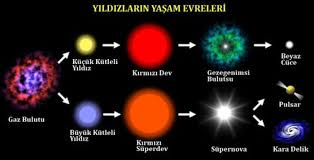

|

Yıldızların Yaşam Döngüsü
Yıldızların yaşam döngüsü, evrendeki en etkileyici ve güçlü süreçlerden biridir. Her yıldız, doğumundan ölümüne kadar milyonlarca hatta milyarlarca
yıl süren bir evrim geçirir. Bu döngü, yıldızın kütlesine bağlı olarak farklı biçimlerde sonuçlanır.
Bir yıldızın yaşamı nebula adı verilen dev gaz ve toz bulutlarında başlar. Kütle çekimi etkisiyle bu bulutlar çöker, yoğunlaşır ve merkezinde sıcaklık
artarak nükleer füzyon başlar. Bu evreye ulaştığında yıldız doğmuş olur. Yıldız, yaşamının büyük kısmını ana kol (main sequence) evresinde geçirir.
Bu dönemde çekirdeğinde hidrojen helyuma dönüşür ve yıldız sabit bir parlaklıkta kalır. Güneş şu anda bu evrededir.
Zamanla çekirdekteki hidrojen tükenir. Yıldız dengesini kaybeder, dış katmanları genişler ve yıldız bir kırmızı dev ya da çok büyükse süperdev haline gelir. Kütlesi küçük olan yıldızlar (örneğin Güneş gibi) bu evreden sonra dış katmanlarını uzaya savurur ve geride beyaz cüce denilen yoğun bir çekirdek bırakır. Beyaz cüce zamanla soğur ve sönerek kara cüce haline gelir.
Ancak çok büyük kütleli yıldızlar için süreç çok daha dramatiktir. Bu yıldızlar, çekirdeğindeki yakıt tamamen tükendiğinde dev bir süpernova patlaması yaşar. Bu patlama, uzaya ağır elementleri saçarak yeni yıldız ve gezegenlerin oluşumuna katkıda bulunur. Patlamadan geriye kalan çekirdek ise ya son derece yoğun bir nötron yıldızı ya da kütlesi yeterince büyükse karadelik haline gelir.
Sonuç olarak, yıldızların yaşam döngüsü doğum, olgunluk ve ölümden oluşan kozmik bir döngüdür. Bu süreç, evrendeki madde ve enerjinin sürekli dönüşümünü
sağlar. Her yıldız öldüğünde, aslında yeni yıldızların doğumu için malzeme bırakır — evrenin sonsuz döngüsü böyle sürer
|